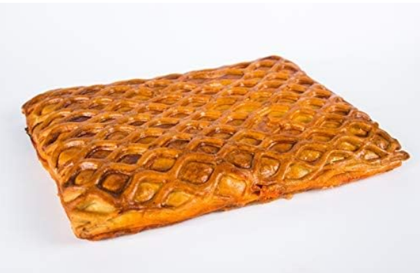
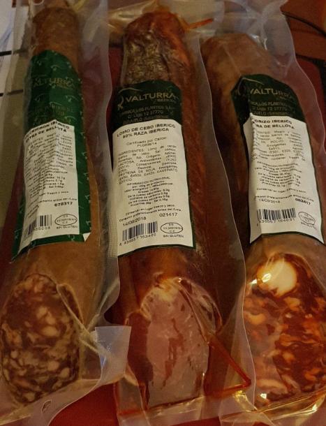
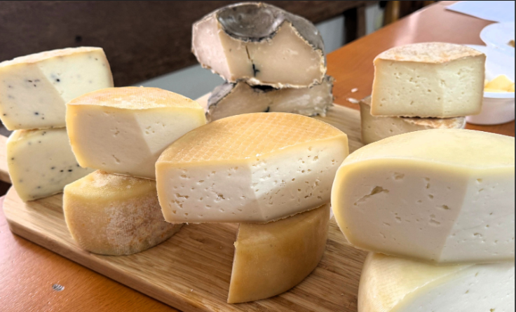
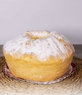

Hornazo de Salamanca
Aunque se considera plato, el hornazo también se vende como producto típico.
Relleno de:
- Lomo
- Jamón
- Chorizo
- Huevo duro

A continuación le presentamos los productos típicos y artesanales que pueden encontrar en Salamanca y provincia de Salamanca
Aunque se considera plato, el hornazo también se vende como producto típico.
Relleno de:

Características:

Además de Guijuelo, Salamanca produce:
Secados al aire y elaborados de forma artesanal.

Ingredientes:
Se suele comer con huevo frito, una combinación muy típica.
Características

Destacados:
Queso de Hinojosa
Queso de los Arribes
Quesos artesanos de la Sierra de Francia

Características:

Pura y aromática
Vinos con carácter, elaborados en el Parque Natural Arribes del Duero

Finísimas y crujientes, a menudo acompañadas con miel.

Rosquillas con aceite y anís.

Bollo grande de limón
